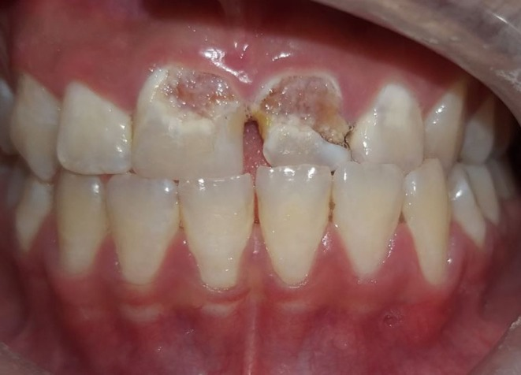
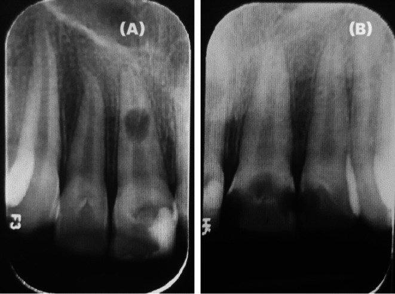
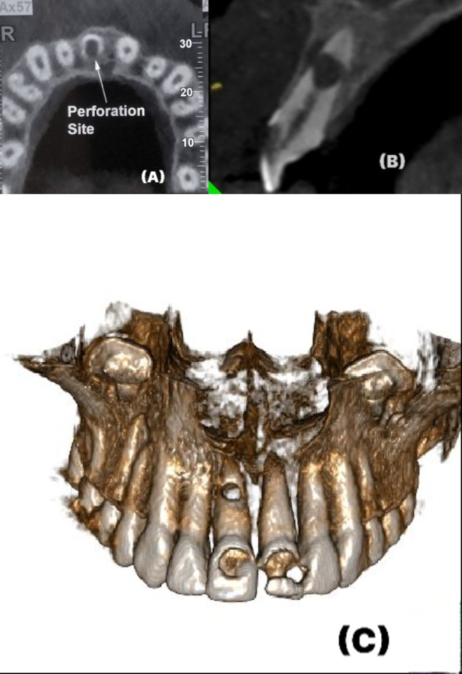

752 — Thiểu sản men Turner ở răng vĩnh viễn sau chấn thương răng sữa / Turner hypoplasia of the permanent successor
Tags: pattern:thieu-san-men pattern:khuyem-khuyet-men-khu-tru pattern:doi-mau-rang pattern:tieu-xuong-chop-rang vung:rang-ham vung:ham-mat vung:so-mat anatomy:rang-ham anatomy:men-rang protocol:CBCT protocol:phim-quanh-dinh protocol:toan-hinh score:MIH-EAPD
Mức chắc chắn (certainty): tổng hợp y văn (literature synthesis) — 206 trẻ / 360 răng vĩnh viễn bị ảnh hưởng / 1.057 răng chứng (Int J Paediatr Dent 2025, PMC12332103), mô học 1 ca Turner nặng (BMC Oral Health 2026, PMC13637313), 1 ca nguyên văn có ảnh (Clin Case Rep 2025, PMC12222176) và 2 nghiên cứu dịch tễ MIH để đối chiếu phân biệt (PMC12658266; PMC12638329). Câu nào là suy luận được ghi [suy luận].
Vì sao bài này quan trọng: 748 đã chốt 52,6–54% mầm răng có di chứng sau chấn thương răng sữa, nhưng dừng ở mức mô tả. Câu hỏi thực hành là: một đốm trắng/ lõm men khu trú ở răng cửa vĩnh viễn là di chứng chấn thương (Turner), khiếm khuyết men răng cửa–răng hàm (MIH) hay nhiễm fluor — ba bệnh cùng trông giống, nhưng thời điểm phục hồi, tiên lượng và cách theo dõi khác nhau; gọi sai dẫn tới phục hồi quá sớm (khi răng chưa mọc đủ), bỏ sót tiêu chân răng, hoặc điều trị răng lành.
1. Tổng quan bệnh học – cơ chế hình ảnh
- Cơ chế: mầm răng vĩnh viễn nằm ngay dưới chóp răng sữa, chỉ cách nhau vài mm xương. Chấn thương lún/ trật/ bật răng sữa, hoặc nhiễm khuẩn quanh chóp răng sữa (sâu sớm, áp-xe), làm nguyên bào tạo men (ameloblast) tổn thương cục bộ trong lúc chúng đang tổng hợp men → men thiếu số lượng (hypoplasia: mỏng, lõm, khuyết) hoặc men đủ dày nhưng sai khoáng (opacity: đốm trắng/ vàng–nâu).
- TẠI SAO thời điểm chấn thương quyết định kiểu khuyết: men răng cửa vĩnh viễn bắt đầu tạo từ 3–4 tháng tuổi và hoàn thành thân răng ~4–5 tuổi; chân răng tiếp tục phát triển tới 9–10 tuổi. Vì vậy:
- 0–2 tuổi: đang tạo men → thiểu sản nặng/ dị dạng thân răng;
- 3–4 tuổi: men đã dày → chủ yếu đốm mờ (opacity);
- ≥ 5 tuổi: thân răng xong → di chứng chuyển sang gãy/ cong chân răng, tiêu chân răng, ít khuyết men [suy luận từ niên biểu, khớp với dữ liệu dưới đây].
- Bằng chứng định lượng (206 trẻ, 360 răng bị ảnh hưởng, 1.057 răng chứng; PMC12332103): thiểu sản và dị dạng tập trung ở nhóm 0–2 tuổi và gắn với trật bên (lateral luxation), lún (intrusion), bật răng (avulsion); đốm mờ khu trú và lan tỏa gặp ở mọi nhóm tuổi và gắn với lung lay, trật ra ngoài, trật bên, lún, bật; nguy cơ cao hơn 7 lần so với răng chứng ở các nhóm chấn thương. Ngay cả nhóm nhẹ nhất: lung lay (subluxation) → thiểu sản 7/100 răng (7%); trật ra ngoài (extrusion) → 2/25 (8%).
- TẠI SAO răng Turner "yếu" hơn vẻ ngoài: mô học ca nặng cho thấy lớp nguyên bào ngà mỏng hơn, ranh giới ngà–tủy mất liên tục, sợi tủy chóp rối loạn, mạch máu giảm, xi măng mỏng hơn và mô tủy viêm (IL-1β, TNF-α cao hơn; CD105, CD31, DSPP, RUNX2 thấp hơn; tất cả P < 0,05) (PMC13637313). Hệ quả: răng có thể tiêu chân răng/ thủng chân răng dù thân răng chỉ "sứt một miếng" — ca nguyên văn có thủng cả mặt ngoài và mặt trong chân răng 21 trên CBCT (PMC12222176).
- Vì sao cần CBCT chứ không chỉ phim quanh đỉnh: phim 2D chồng hình thân răng–chân răng và không thấy hướng thủng/ tiêu chân răng; CBCT lát mỏng ≤ 0,2 mm cho thấy vị trí lỗ thủng, mức tiêu xương và độ cong chân răng (dilaceration) — dữ liệu quyết định giữ hay nhổ [suy luận, khớp ca nguyên văn].
2. Mẫu hình + chẩn đoán phân biệt theo vị trí (gamut)
Câu hỏi trung tâm: khuyết men này là MỘT RĂNG (khu trú) hay NHIỀU RĂNG (hệ thống)?
- A. Một răng, kề răng sữa có tiền sử chấn thương/ áp-xe → Turner. Vị trí hay gặp: răng cửa giữa hàm trên, đôi khi răng cửa bên (ca nguyên văn: 11, 21 và 22 cùng bị, vì cùng vùng chấn thương).
- B. Nhiều răng, không đối xứng, có răng hàm lớn thứ nhất bị nặng hơn → MIH. Tiêu chuẩn EAPD: ≥ 1 răng hàm lớn vĩnh viễn thứ nhất ± răng cửa, đốm mờ khu trú rõ ranh, có thể vỡ men sau mọc (post-eruptive breakdown). Tỉ lệ 12,7% (95% CI 11,2–14,3%) ở 1.834 trẻ 7–11 tuổi Việt Nam; 9–11% ở Ireland (PMC12658266; PMC12638329).
- C. Nhiều răng đối xứng, cùng thời điểm tạo men, vùng có fluor nước cao → nhiễm fluor (fluorosis). Đốm lan tỏa, trắng đục/ nâu, không mất chất (trừ thể nặng), phân độ Dean; men dày bình thường.
- D. Toàn bộ hoặc gần toàn bộ răng, tính chất gia đình → thiểu sản men bẩm sinh (amelogenesis imperfecta). Men mỏng/ rỗ/ đổi màu lan rộng, nhiều thế hệ.
- E. Khuyết men khu trú nhưng KHÔNG có tiền sử chấn thương: sâu răng sớm/ đốm trắng do mảng bám (white spot), nhiễm tetracycline (dải ngang), di chứng điều trị chỉnh nha — bối cảnh là chốt.
Gamut "một răng mọc lệch/ ngắn/ đổi màu" [suy luận]: Turner; răng sinh đôi/ hợp nhất; chấn thương đang hoạt động (gãy thân răng); tiêu chân răng do chấn thương; răng trong (embedded) có nang; di chứng nhổ răng sữa quá sớm (mất khoảng, lệch trục).
3. Bảng so sánh phân biệt (ma trận đối chiếu)
| Thực thể (entity) | Hình ảnh/ lâm sàng điển hình | Chốt vào (rule-in) | Chốt loại (rule-out) | Gợi ý xác nhận |
|---|---|---|---|---|
| Thiểu sản men Turner | Một răng, đốm trắng–vàng–nâu khu trú, lõm/ khuyết men, thân răng dị dạng hoặc nhỏ; răng sữa kế cận có tiền sử chấn thương/ áp-xe | Khu trú 1 răng + tiền sử chấn thương/ nhiễm răng sữa cùng vùng + men mỏng | Đốm đối xứng nhiều răng hoặc có răng hàm lớn thứ nhất bị → không phải Turner | Phim quanh đỉnh + CBCT khi nghi tiêu/ thủng chân răng; so bên đối diện |
| MIH | ≥ 1 răng hàm lớn thứ nhất ± cửa, đốm mờ khu trú ranh rõ, vỡ men sau mọc, nhạy cảm/ ê khi chải | Răng hàm lớn thứ nhất + đốm khu trú + vỡ sau mọc | Chỉ 1 răng cửa đơn độc, không răng hàm → nghi Turner/ chấn thương | EAPD criteria; đối chiếu 12,7% dân số chung để không gọi bừa [suy luận] |
| Nhiễm fluor | Lan tỏa, đối xứng, cùng nhóm răng tạo men một lúc, trắng đục/ nâu, men không mỏng | Đối xứng + vùng fluor nước + không mất chất | Bất đối xứng một răng + mất chất → Turner | Dean index; tiền sử nguồn nước |
| Amelogenesis imperfecta | Toàn bộ/ gần toàn bộ răng, men mỏng–rỗ–đổi màu, gia đình | Nhiều răng cả hai hàm + tiền sử gia đình | Chỉ vài răng khu trú → không phải AI | Ảnh gia đình, di truyền |
| Đốm trắng do mảng bám (white spot) | Cổ răng, men nguyên vẹn, mất khoáng khi khô, hồi phục sau vệ sinh/ fluor | Vị trí cổ răng + men còn nguyên + đáp ứng fluor | Lõm/ mất chất → không phải white spot | Khám khô/ ướt, theo dõi 3 tháng |
| Tiêu chân răng trong ở răng Turner | Hình sáng bầu dục trong chân răng trên phim, thủng mặt ngoài/ trong trên CBCT, tủy còn sống | Bóng tiêu trong chân + thủng vỏ chân + tiền sử chấn thương | Thủng do nội nha can thiệp trước đó → không phải tiêu tự phát | CBCT lát ≤ 0,2 mm, so phim cũ |

Thiểu sản men Turner ở 11 và 21 (kèm 22): khuyết men khu trú, lộ ngà, bờ khuyết rõ — khác đốm mờ lan tỏa của fluor/ MIH. Nguồn: Ghandi M et al., Clin Case Rep 2025;13:e70587 (PMC12222176), CC BY-NC-ND.Dấu hiệu cần đọc trên phim
- Phim quanh đỉnh: so chiều dày men với răng đối diện cùng loại; tìm bóng sáng trong chân răng (tiêu trong) và mất liên tục vỏ chân.
- CBCT: xác nhận hướng thủng (ngoài/ trong), độ cong chân răng, và mức xương ổ răng trước khi quyết định nội nha hay nhổ.
4. Protocol chụp + hệ phân độ/điểm chuẩn hóa
- Bước 1 — lâm sàng: đếm số răng bị, vị trí (khu trú vs đối xứng), có mất chất hay không, tiền sử chấn thương/ nhổ/ áp-xe răng sữa, tiền sử gia đình, nguồn nước.
- Bước 2 — chẩn đoán hình ảnh: phim quanh đỉnh (hoặc toàn hình khi nhiều răng/ đang mọc) → CBCT FOV hẹp khi nghi tiêu chân răng, thủng, cong chân răng, răng ngầm; dùng nguyên tắc ALARA (trẻ em: FOV nhỏ nhất đủ thấy tổn thương, lát mỏng).
- Bước 3 — phân loại khuyết men (dùng để chọn điều trị):
| Mức | Mô tả | Xử trí ban đầu |
|---|---|---|
| 1 | Đốm mờ, men còn nguyên, không ê | Theo dõi, fluor vecni, vệ sinh; không mài |
| 2 | Khuyết men nông, lộ ngà ít, không ê nhiều | Bít xoang/ composite sau khi răng mọc đủ; GIC tạm nếu trẻ còn nhỏ |
| 3 | Khuyết sâu/ rộng, ê răng, thân răng dị dạng | Composite/ veneer; cân nhắc mão nếu cấu trúc yếu |
| 4 | Kèm tiêu chân răng/ thủng/ cong chân răng | Nội nha (MTA) hoặc nhổ + quản lý khoảng; không trám thân răng trước khi xử lý chân răng |
- Thời điểm phục hồi: chờ răng mọc đủ (bờ men–lợi ổn định, thường 2–3 tháng sau khi mọc hết) rồi mới làm phục hồi thẩm mỹ vĩnh viễn; trong thời gian chờ, bít kín để chống sâu và giảm ê [suy luận].
- Theo dõi: khám + phim mỗi 6–12 tháng tới khi chân răng đóng cuống; ca có tiêu chân răng theo dõi 12 và 24 tháng (ca nguyên văn: MTA bít phần chóp + vùng tiêu, phim lại 12 tháng và 24 tháng ổn định).
flowchart TD
A["Khuyết men ở răng vĩnh viễn"] --> B{"Bao nhiêu răng?"}
B -->|Một răng| C{"Răng sữa kế cận có chấn thương hoặc áp-xe?"}
B -->|Nhiều răng| D{"Đối xứng và cùng nhóm tạo men?"}
C -->|Có| E["Turner: chụp quanh đỉnh, CBCT nếu nghi tiêu chân răng"]
C -->|Không| F["Xem lại white spot, sâu sớm, di chứng chỉnh nha"]
D -->|Có| G["Nghi fluor hoặc amelogenesis imperfecta"]
D -->|Không, có răng hàm lớn thứ nhất| H["MIH theo tiêu chuẩn EAPD"]
E --> I{"Có tiêu hoặc thủng chân răng?"}
I -->|Có| J["Nội nha MTA hoặc nhổ, quản lý khoảng"]
I -->|Không| K{"Mất chất men?"}
K -->|Không| L["Theo dõi, fluor vecni"]
K -->|Có| M["Bít kín tạm rồi phục hồi khi mọc đủ"]
Phân độ tham chiếu để không chẩn đoán quá tay: MIH 12,7% dân số trẻ (EAPD) — nghĩa là đốm mờ ở trẻ rất thường, không đồng nghĩa Turner; ngược lại, 7–8% răng sau chấn thương sữa nhẹ nhất đã có thiểu sản, nên tiền sử chấn thương là dấu hiệu nặng ký dù khuyết nhỏ.
5. Biến thể bình thường và cạm bẫy
- Biến thể bình thường: đường tăng trưởng men (perikymata)/ đốm mờ nhẹ ở rìa cắn răng mới mọc; men mỏng sinh lý ở hố răng — không phải thiểu sản.
- Cạm bẫy 1 — "một đốm trắng = MIH": MIH bắt buộc có răng hàm lớn thứ nhất; một răng cửa đơn độc phải nghĩ Turner trước.
- Cạm bẫy 2 — bỏ qua chân răng: thân răng chỉ sứt nhẹ nhưng tiêu chân răng đã thủng (ca nguyên văn: thủng cả mặt ngoài và mặt trong chân 21) → luôn chụp phim trước khi hứa "trám là xong".
- Cạm bẫy 3 — phục hồi quá sớm: trám khi răng chưa mọc đủ → viền phục hồi dưới lợi, viêm lợi, phải làm lại.
- Cạm bẫy 4 — nhổ răng vì "dị dạng": nếu chân răng còn tốt và không tiêu/ thủng, giữ răng + phục hồi thẩm mỹ thường tốt hơn implant (trẻ chưa đủ tuổi cấy ghép) [suy luận].
- Cạm bẫy 5 — satisfaction of search: thấy khuyết men rồi dừng, bỏ sót răng bên cạnh (ca nguyên văn có 3 răng: 11, 21, 22) → khám và chụp cả vùng.
6. Tự lượng giá — Blind Quiz
Ca 1 — trẻ 10 tuổi, hai răng cửa giữa hàm trên có khuyết men từ khi mọc
- Gợi ý lâm sàng: khuyết men khu trú, lộ ngà, không ê nhiều; răng sữa cùng vùng từng bị chấn thương.
- Câu hỏi: Ba chẩn đoán phân biệt? Dấu hiệu nào chốt Turner thay vì MIH/ fluor? Cần chụp gì trước khi trám?
Bấm để hiện đáp án (findings + chẩn đoán)
- Dấu hiệu: men mỏng/ khuyết khu trú ở 11 và 21 (kèm 22), bờ khuyết rõ, màu vàng–nâu do lộ ngà; các răng còn lại men bình thường.
- Chẩn đoán: thiểu sản men Turner sau chấn thương răng sữa — khu trú một vùng + tiền sử chấn thương là chốt; MIH cần răng hàm lớn thứ nhất, fluor thì đối xứng lan tỏa.
- Cần làm: phim quanh đỉnh/ CBCT loại tiêu chân răng/ thủng trước khi phục hồi; phục hồi khi răng mọc đủ.
- Nguồn ảnh: Ghandi M et al., Clin Case Rep 2025;13:e70587 (PMC12222176), CC BY-NC-ND.
Ca 2 — cùng bệnh nhân, răng 21 ê khi ăn và đổi màu

- Gợi ý lâm sàng: răng Turner, tủy còn đáp ứng, đau khi kích thích.
- Câu hỏi: Bóng sáng trong chân răng 21 là gì? Vì sao phải làm CBCT?
Bấm để hiện đáp án (findings + chẩn đoán)
- Dấu hiệu: bóng sáng bầu dục trong chân răng 21 (A) — tiêu chân răng trong (internal inflammatory root resorption); chân răng các răng bên không đổi.
- Chẩn đoán: tiêu chân răng trong trên răng Turner; phim 2D không thấy hướng thủng → CBCT để đánh giá thủng mặt ngoài/ mặt trong và lập kế hoạch nội nha.
- Nguồn ảnh: Ghandi M et al., Clin Case Rep 2025;13:e70587 (PMC12222176), CC BY-NC-ND.
Ca 3 — CBCT của chính răng 21 đó

- Gợi ý lâm sàng: kế hoạch nội nha, cần biết lỗ thủng ở đâu.
- Câu hỏi: (A) và (B) cho thấy gì? Điều này đổi kế hoạch điều trị thế nào?
Bấm để hiện đáp án (findings + chẩn đoán)
- Dấu hiệu: (A) lát trục — lỗ thủng cả mặt ngoài và mặt trong chân răng kèm tiêu xương ổ; (B) lát đứng — vùng tiêu/ thủng và mức xương; (C) dựng 3D — khuyết men thân răng tương ứng.
- Chẩn đoán: tiêu chân răng trong có thủng hai mặt trên răng Turner; xử trí trong ca gốc: nội nha qua đường vào phía ngoài, nút MTA bít chóp và vùng tiêu, theo dõi 12 và 24 tháng ổn định.
- Nguồn ảnh: Ghandi M et al., Clin Case Rep 2025;13:e70587 (PMC12222176), CC BY-NC-ND.
Bài liên quan chéo
- 748 – Chấn thương răng SỮA và mầm răng vĩnh viễn: di chứng 52,6–54%, theo dõi tới khi mọc đủ
- 747 – Chấn thương răng và ổ răng ở trẻ: luxation – intrusion – avulsion, nẹp và CBCT
- 749 – Nhiễm khuẩn răng lan trung thất: biến chứng xa của ổ nhiễm răng sữa
Ảnh
752_turner-men_Clinical-hypoplasia_ClinCaseRep2025-F1.jpg— Ghandi M et al. (PMC12222176), CC BY-NC-ND, nguyên bản.752_turner-men_Periapical_ClinCaseRep2025-F2.jpg— Ghandi M et al. (PMC12222176), CC BY-NC-ND, nguyên bản.752_turner-men_CBCT_ClinCaseRep2025-F3.jpg— Ghandi M et al. (PMC12222176), CC BY-NC-ND, nguyên bản.- Chi tiết giấy phép từng ảnh:
images/CREDITS.md.
Không dùng để chẩn đoán độc lập khi chưa có người hướng dẫn.